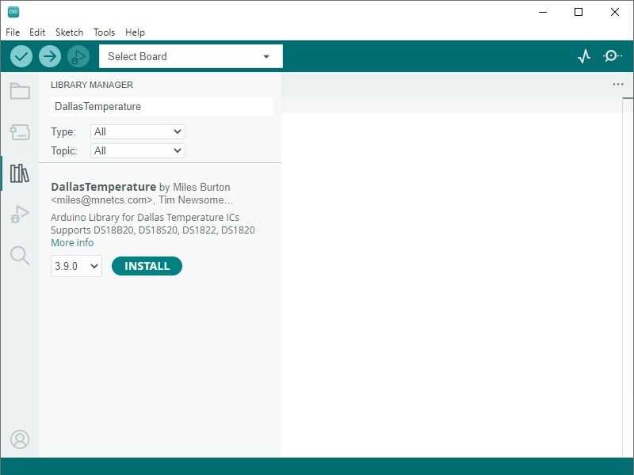
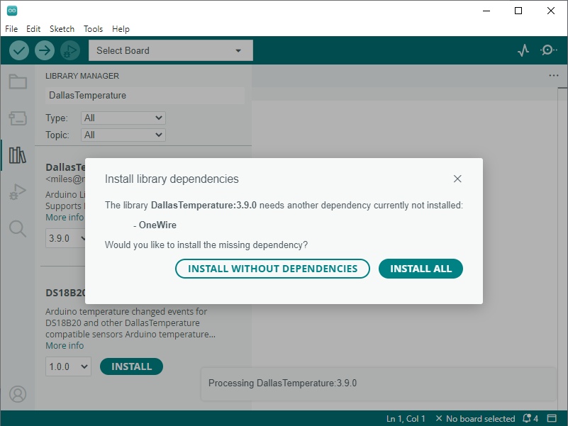
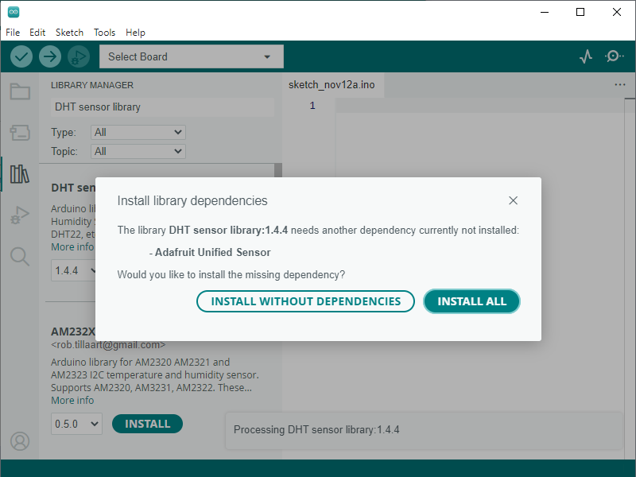
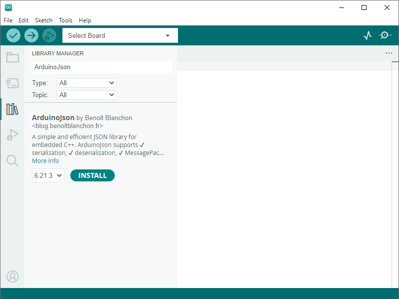
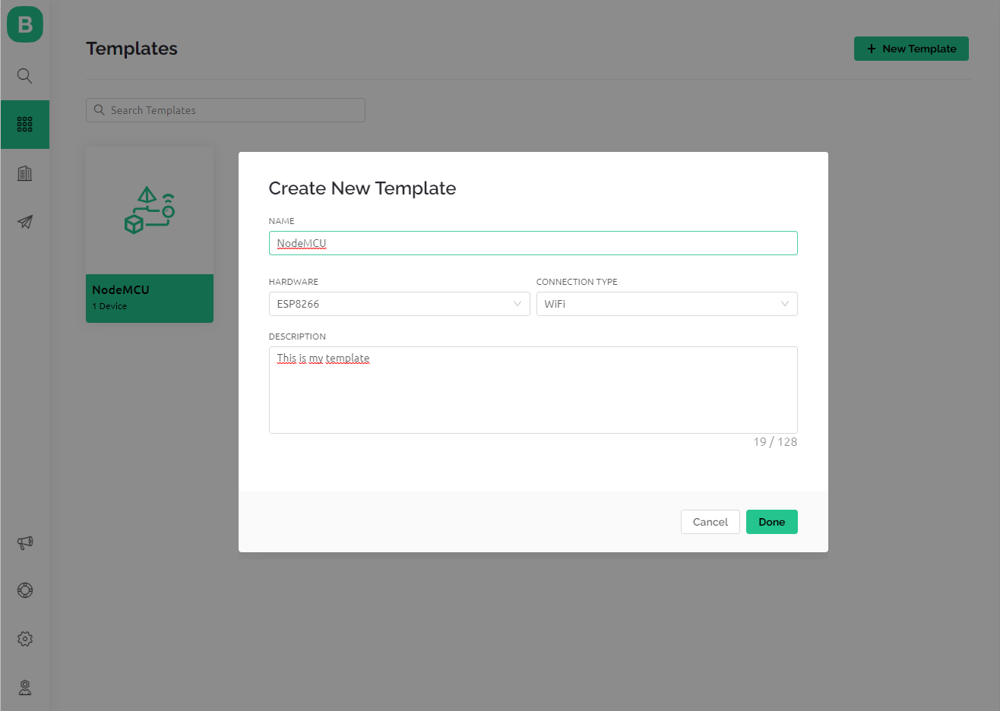
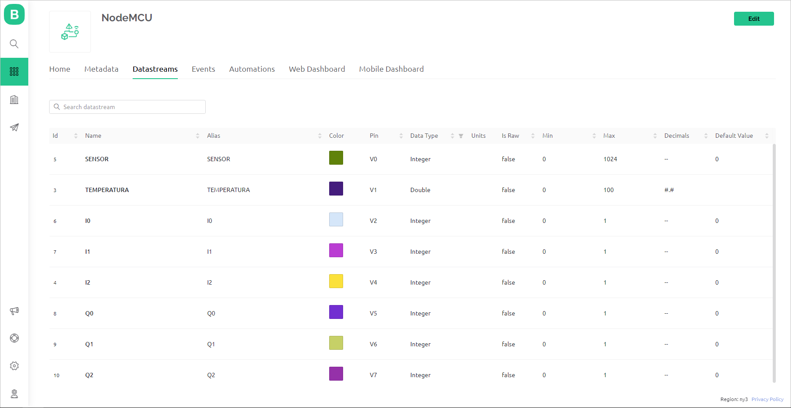
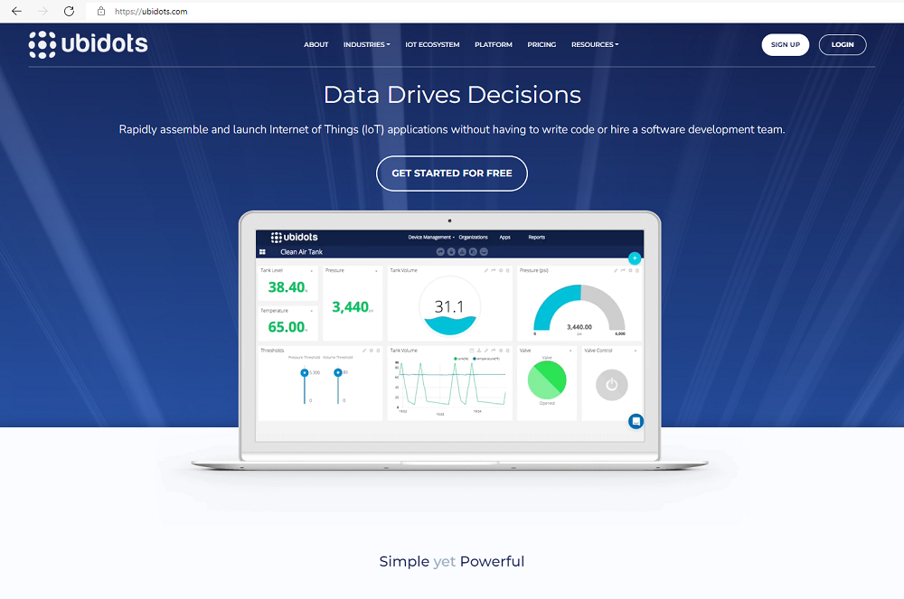

2 - Visualización display

Abrir el menú de la izquierda LIBRARY MANAGER
Buscar e instalar la librería Adafruit SH1106

Aceptar INSTALL ALL la instalación de las librerías adicionales Adafruit BusIO y Adafruit GFX Library

Abrir el menú Archivo-->Ejemplos-->Adafruit SH1106-->OLED_QTPY_SH1106 y seleccionar el proyecto ejemplo SH1106_128x64_i2c_QTPY

3 - Entradas y salidas digitales

4 - Control motor DC

5 - Control relé electromecánico

Nota: Este circuito funciona con el código del proyecto 4
6 - Control relé de estado sólido

Nota: Este circuito funciona con el código del proyecto 4
7 - Control TRIAC

Nota: Este circuito funciona con el código del proyecto 4
8 - Control contactor

Nota: Este circuito funciona con el código del proyecto 4
9 - Contador

10 - Entrada análoga

11 - Salida análoga (PWM)

12 - Comunicación One Wire: sensor DS18B20

Acceder a LIBRARY MANAGER, buscar e instalar la librería DallasTemperature

Aceptar INSTALL ALL la instalación de la librería adicional OneWire

13 - Comunicación One Wire: sensor DHT11

Acceder a LIBRARY MANAGER, buscar e instalar la librería DHT sensor library

Aceptar INSTALL ALL la instalación de la librería adicional Adafruit Unified Sensor

14 - Comunicación One Wire: sensor DHT21

15 - Comunicación One Wire: sensor DHT22

16 - Comunicación I2C: sensor SHT1x

Acceder a LIBRARY MANAGER, buscar e instalar la librería SHT1x sensor library for ESPx

17 - Comunicación serial asíncrona (UART)

Cargar el programa en el dispositivo y abrir el menú Herramientas-->Monitor Serie para visualizar los datos enviados por el dispositivo.


Abrir el menú Herramientas-->Serial Plotter para visualizar gráficamente la señal análoga medida por el dispositivo.


18 - Comunicación serial asíncrona (UART)

Acceder a LIBRARY MANAGER, buscar e instalar la librería ArduinoJson

Descargar y ejecutar el programa COM_TEST para visualizar los datos enviados por el dispositivo.

19 - Comunicación Bluetooth
Nota: Este circuito funciona con el código del proyecto 18
20 - Modo punto de acceso (Access Point - AP)
En este modo de funcionamiento se creará una red WiFi en la que una placa ESP32 cumplirá la función de servidor al cual se podrán conectar dispositivos como PC/Laptop, tablet, móviles, otras placas ESP32 o cualquier otro dispositivo con capacidad de conexión WiFi.


Modificar los parámetros ssid (Nombre de la red WiFi) y password (Contraseña de la red WiFi). Estos parámetros corresponden a la nueva red WiFi que será creada por el dispositivo.
Conexión desde dispositivo móvil
Conectar el móvil al punto de acceso (red WiFi) difundida por el dispositivo

Abrir en el navegador web la dirección 192.168.4.1

Conexión desde PC
Conectar el PC al punto de acceso (red WiFi) difundida por el dispositivo

Abrir en el navegador web la dirección 192.168.4.1

Programa App Inventor 2


21 - Modo estación (Station - STA)
En este modo de funcionamiento la placa ESP32 se conecta a una red WiFi existente. Dentro de ésta red la placa se podrá conectar con dispositivos como PC/Laptop, tablet, móviles, otras placas ESP32 o cualquier otro dispositivo con capacidad de conexión WiFi.


Modificar los parámetros STASSID (Nombre de la red WiFi) y STAPSK (Contraseña de la red WiFi). Estos parámetros corresponden a una red WiFi existente a la que se conectará el dispositivo.
El dispositivo intentará conectarse a la red inalámbrica configurada y mostrará la dirección IP asignada que le corresponde dentro de la red.
Conexión desde dispositivo móvil
Conectar el móvil al mismo punto de acceso (red WiFi) al que está conectado el dispositivo

Abrir en el navegador web la dirección IP asignada al dispositivo

Conexión desde PC
Conectar el PC al mismo punto de acceso (red WiFi) al que está conectado el dispositivo.

Abrir en el navegador web la dirección IP asignada al dispositivo.

Programa App Inventor 2
Se puede utilizar la misma App del capítulo 2.4.18 (Utilizar la dirección IP asignada al dispositivo).
Blynk IoT
Blynk es una plataforma que permite la recolección y almacenamiento en la nube de datos de sensores para la creación de aplicaciones para Internet de las cosas (IoT).

Para enviar y recibir información con Blynk es necesario registrar una cuenta gratuita con los siguientes pasos:
Entrar en https://blynk.io/.
Si ya dispone de una cuenta, hacer click en LOG IN para iniciar sesión. Si es la primera vez que utiliza Blynk, hacer click en "START FREE".

Registrarse con una cuenta de correo electrónico (debe abrir el enlace de verificación enviado a la cuenta de correo electrónico registrada).

Iniciar sesión con la cuenta registrada.

Crear una nueva plantilla (Template) con la configuración de hardware apropiada.

Crear las variables conectadas al dispositivo (Datastreams).

Configurar el Web Dashboard asociado a las variables agregadas en el paso anterior.

Agregar un nuevo dispositivo a partir de la plantilla creada (template).


Obtener la información del dispositivo (necesaria para el código en Arduino).

Visualizar el Dashboard Online (Cuando el dispositivo esté programado y conectado).

Instalación de la librería Blynk en Arduino
Acceder al Administrador de bibliotecas, buscar e instalar la librería Blynk


Escribir salida digital

Leer sensor

Modificar los parámetros ssid (Nombre de la red WiFi) y password (Contraseña de la red WiFi). Estos parámetros corresponden a una red WiFi existente a la que se conectará el dispositivo.
Modificar los parámetros:
BLYNK_TEMPLATE_ID
BLYNK_DEVICE_NAME
BLYNK_AUTH_TOKEN
puede obtener los valores en la sección Device Info del dashboard creado en Blynk.
ThingSpeak IoT
ThingSpeak es una plataforma que permite la recolección y almacenamiento en la nube de datos de sensores para la creación de aplicaciones para Internet de las cosas (IoT).

Para enviar y recibir información con ThingSpeak es necesario registrar una cuenta gratuita con los siguientes pasos:
Entrar en http://thingspeak.com y hacer clic en "Get Started For Free".

Si ya dispone de una cuenta, iniciar sesión. Si es la primera vez que utiliza ThingSpeak, hacer click en "Create one!"

Registrarse con una cuenta de correo electrónico (debe abrir el enlace de verificación enviado a la cuenta de correo electrónico registrada).

Instalación de la librería ThingSpeak en Arduino
Acceder al Administrador de bibliotecas, buscar e instalar la librería ThingSpeak


Escribir salida digital

Leer sensor

Es necesario crear un canal en ThingSpeak para poder enviar y leer información.
Hacer clic en "New Channel".

Diligenciar los datos para asignar un nombre al canal y sus campos (cada canal puede tener hasta ocho campos).
Hacer click en "Save Channel".

Dirigirse a la pestaña "Sharing" y seleccionar la opción "Share chanel with everyone".

Dirigirse a la pestaña "API Keys" para obtener los datos de acceso al canal.
Estos datos son necesarios para programar el código en Arduino y para desarrollar la aplicación en App Inventor 2.
Channel ID (ID del canal): Lugar del espacio azul
Write API Key (Clave de escritura): Lugar del espacio verde
Read API Key (Clave de lectura): Lugar del espacio rojo

Modificar las variables ssid (Nombre de la red WiFi) y password (Contraseña de la red)
Modificar la variable channel por el ID del canal creado en ThingSpeak.
Programa App Inventor 2


Utilizar la clave "Write API Key para para inicializar la variable ClaveEscritura (espacio verde).


Ubidots IoT
Ubidots es una plataforma que permite la recolección y almacenamiento en la nube de datos de sensores para la creación de aplicaciones para Internet de las cosas (IoT).

Para enviar y recibir información con Ubidots es necesario registrar una cuenta gratuita con los siguientes pasos:
Entrar en https://ubidots.com/.
Si ya dispone de una cuenta, hacer click en LOG IN para iniciar sesión. Si es la primera vez que utiliza Ubidots, hacer click en "GET STARTED FOR FREE".

Puede registrar una nueva cuenta para uso personal o educativo:

Diligenciar los campos de registro:

Iniciar sesión con la cuenta registrada.

Instalación de la librería Ubidots en Arduino
Descargar la librería de Ubidots para ESP8266 https://github.com/ubidots/ubidots-esp8266/archive/master.zip
Acceder al Administrador de bibliotecas, buscar e instalar la librería ubidots-esp8266-master


Escribir salida digital

Leer sensor

Modificar los parámetros ssid (Nombre de la red WiFi) y password (Contraseña de la red WiFi). Estos parámetros corresponden a una red WiFi existente a la que se conectará el dispositivo.
Modificar el parámetro:
UBIDOTS_TOKEN
puede obtener los valores en la sección Device Info del dashboard creado en UBIDOTS.